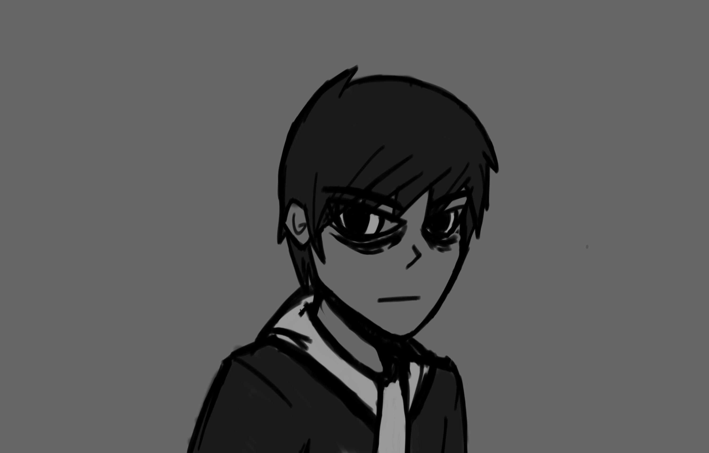

Lab 9:Style Blocking Elements

Subject
In this lab we were tasked with changing the margins, color of the body content, and adding a border to our html with a CSS file. For the bonus task we had to reformat our home index with a CSS file.
Difficulties
We didn't really encounter any difficulties with this lab. Most of the work was carried over from previous labs.
Results
This lab and my home page now have matching appearances due to them sharing the same CSS.
Back to Home